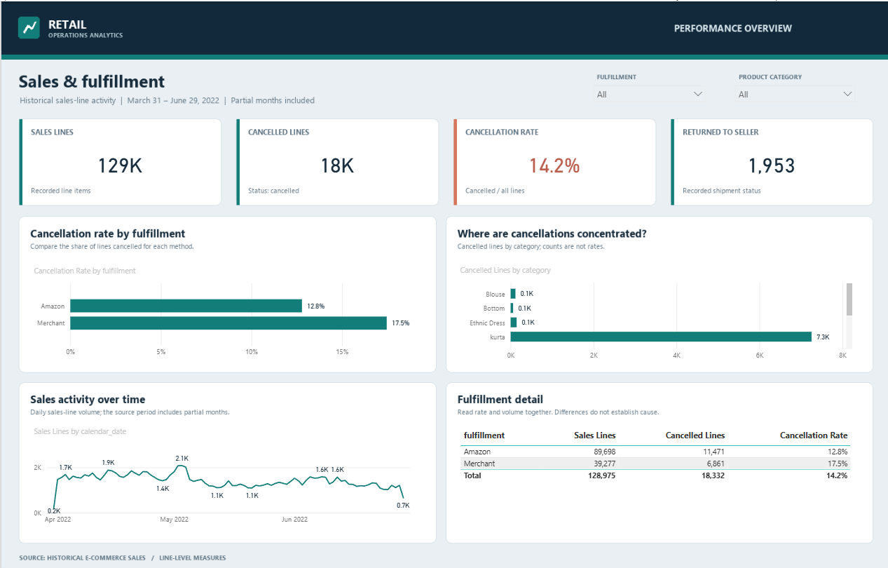
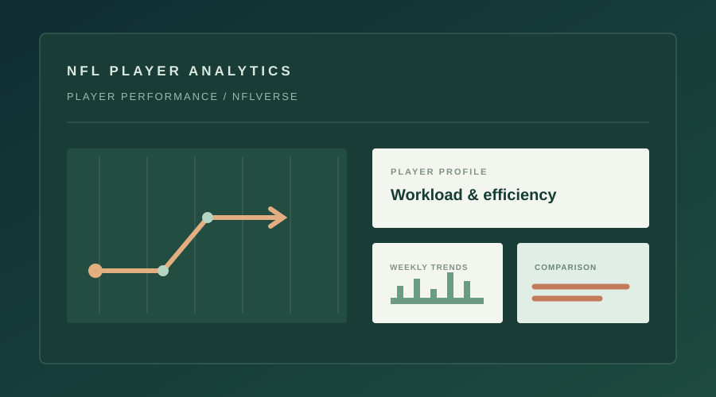

01 / DATA ENGINEERING & ANALYTICSRetail Lakehouse
Seven e-commerce sources transformed into validated sales, inventory, and data-quality reporting.
Explore the case studyDATA ENGINEERING / CLOUD / ANALYTICS
Engineering experience.
An analyst’s perspective.
I build data pipelines, automate cloud infrastructure, and develop reporting that helps teams understand their operations. My experience spans financial services, vendor analytics, and healthcare quality reporting.
Data engineering · Cloud infrastructure · Analytics
EDUCATION & CREDENTIALS
B.S. Data Management / Data Analytics
Western Governors University
AWS Certified Cloud Practitioner
HashiCorp Certified Terraform Associate
CompTIA A+
CompTIA Network+
CompTIA IT Operations Specialist
Udacity Data Analyst Nanodegree
CIW Data Analyst
Microsoft: Querying Data with Transact-SQL
CompTIA Project+
ITIL Foundation
SAFe Agile training
01 / SELECTED WORK
A closer look at selected data engineering and analytics work.

01 / DATA ENGINEERING & ANALYTICSSeven e-commerce sources transformed into validated sales, inventory, and data-quality reporting.
Explore the case study 02 / DATA ENGINEERING & ANALYTICS
02 / DATA ENGINEERING & ANALYTICSExplore historical Nasdaq stock prices, session movers, and an interactive market heatmap.
Explore the dashboardSynthetic admissions transformed and reconciled with Databricks, PySpark, and Power BI.
Explore the case study
04 / SPORTS DATA & ANALYTICSIndependent analysis of NFL player performance through weekly trends, workload, efficiency, and comparisons.
Explore the dashboard 05 / DATA ENGINEERING
05 / DATA ENGINEERINGScheduled forecast ingestion, validation, and PostgreSQL storage for a fictional distribution network.
Explore the case study02 / PROFESSIONAL EXPERIENCE
Production cloud platforms, leadership reporting, and healthcare quality programs. A background that connects technical delivery with the people relying on the result.
Built batch and change-data-capture pipelines with Python and PySpark, modeled historical datasets, and developed APIs for production AWS platforms.
Used SQL and AWS services to build cloud data domains that mirrored, enriched, and unified vendor and other source data for reporting and application consumption. Delivered infrastructure with Terraform and YAML-defined Azure DevOps pipelines, with integration tests, monitoring, and access controls.
Cross-trained across all data domains and participated in an on-call Site Reliability Engineering rotation, troubleshooting data product issues.
Built Claude Code skills to assist with source-to-target and Glue job QA, and to automate Glue job refactoring across table types.
Python / PySpark / SQL / PostgreSQL / AWS Glue / S3 / EventBridge / Step Functions / Lambda / RDS / Athena / Terraform / Azure DevOps / Claude CodeDeveloped Tableau dashboards and automated reporting with SQL and Tableau Prep for a call center handling more than 300,000 calls per month across seven lines of business.
Compared internal and international vendor performance on service levels, call handling, quality, resolution, and customer satisfaction. Presented findings to senior leadership and aligned reporting definitions across teams.
SQL / Tableau / Tableau Prep / Stakeholder reportingLed reporting initiatives across clinical workflows, revenue cycle operations, and healthcare quality programs.
Built automated dashboards using SQL and Power Query in Excel for managers and executive leadership. Supported registry implementation, data validation, and staff training.
SQL / Power Query / Tableau / Excel / Crystal Reports / Data validation03 / TECHNICAL CAPABILITIES
Experience across the full data lifecycle, from infrastructure and pipelines to modeling, analysis, and reporting.
Ingestion pipelines, historical data models, API development, and data validation.
Cloud services, Infrastructure as Code, CI/CD, monitoring, and access controls.
Operational dashboards, quality reporting, metric definitions, and stakeholder communication.
AI-assisted coding, debugging, documentation, analysis, research, and workflow automation.
04 / CONTACT
I bring experience building cloud data platforms and turning complex data into reporting that leaders can use. If your organization needs someone who understands both the engineering and the business question, I’d welcome a conversation.
Email